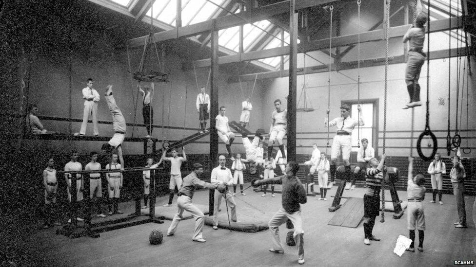

La nostra storia
Scopri la meravigliosa storia di Bora Bora Fitness Club
Il nostro passato
Gli inizi
La storia della palestra oggi conosciuta come Bora Bora Fitness Club ha inizio nel lontano 1930 quando Alderano Villotti decise di lasciare per sempre l'Italia e andare a vivere nel paradiso terrestre di Bora Bora. Alderano era un grande esperto di fitness per la sua epoca, egli infatti si occupò personalmente dell'allenamento di alcuni soldati scelti durante la Prima guerra mondiale. In quel periodo sull'isola non era però presente alcun posto dove potersi allenare, Alderano decise quindi di costruire una palestra per poter trasmettere agli abitanti dell'isola la propria passione. La palestra inizialmente aveva pochi e semplici attrezzi, ma col passare del tempo l'interesse suscitato nella piccola popolazione di Bora Bora portò ad un ampliamento della struttura.
La Seconda Guerra Mondiale

Durante la Seconda guerra mondiale, Bora Bora ospitò una base statunitense comprensiva di 5.000 soldati e 9 navi. La palestra in quel periodo diventò un importante centro per l'allenamento dei soldati anche grazie all'esperienza di Alderano. Questo periodo portò a una grande evoluzione della struttura grazie a tecnologie provenienti direttamente dagli Stati Uniti.
Bora Bora Fitness Club oggi
Hawaiki Nui Va'a
A livello sportivo, Bora Bora è, insieme con le vicine Huahine, Raiatea e Tahaa, una delle quattro isole tra le quali si svolge l'Hawaiki Nui Va'a, competizione internazionale di canoe polinesiane va'a. Molti atleti che partecipano alla competizione si allenano al Bora Bora Fitness Club, la palestra infatti vanta molti iscritti vincitori di questa competizione.

Chi siamo
Nel 2018 i proprietari della palestra hanno deciso di cambiare il nome della struttura in Bora Bora Fitness Club. Al giorno d'oggi la palestra è frequentata da molti abitanti dell'isola, ma anche alcuni turisti scelgono di frequntarla durante le loro vacanze. La struttura è cambiata molto negli anni e attualmente vanta attrezzature all'avanguardia e personale con ottima formazione.